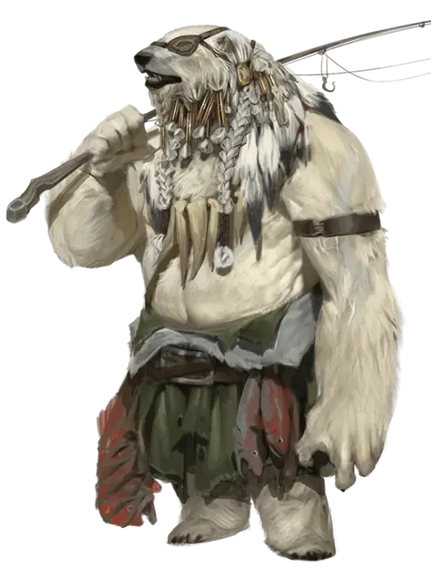

Голиаф-вермедведь
Goliath Werebear
Средний Гуманоид (Голиаф, Перевертыш), нейтрально-добрый

Класс Доспеха 10 (10 в облике гуманоида, 12 природный доспех в облике медведя и гибридном облике)
Хиты 161 (19к8 + 76)
Скорость 30 футов (40 футов в облике медведя и гибридном облике), плавая 30 футов ( в гибридном или облике медведя)
| мод | спас | ||
|---|---|---|---|
| СИЛ | 20 | +5 | +5 |
| ЛОВ | 10 | +0 | +0 |
| ТЕЛ | 18 | +4 | +4 |
| мод | спас | ||
|---|---|---|---|
| ИНТ | 10 | +0 | +0 |
| МДР | 15 | +2 | +2 |
| ХАР | 10 | +0 | +0 |
Навыки Атлетика +8, Восприятие +8, Выживание +5
Уязвимость к урону огонь
Сопротивление урону холод
Иммунитет к урону дробящий, колющий, рубящий от немагических атак, кроме нанесённых посеребрённым оружием
Чувства пассивное Восприятие 18
Языки Любой 2 (Общий, Великаний, но не может говорить в облике медведя)
Опасность 8 (3900 опыта)
Бонус мастерства +3
Особенности
Перевертыш. Вермедведь может действием превратиться в гибрид медведя и гуманоида Большого размера или медведя Большого размера, или же принять свой истинный облик гуманоида. Все его статистики кроме размера и КД остаются одинаковыми во всех обликах. Все несомое и носимое им снаряжение не превращается. Он принимает свой истинный облик, если умирает.
Тонкий нюх. Вермедведь совершает с преимуществом проверки Мудрости (Восприятие), полагающиеся на обоняние.
Рождённый в горах. Голиаф привычен к большим высотам, включая высоту более 20 000 футов над уровнем моря.
Мощное телосложение (только в облике гуманоида). Голиаф считается на один размер больше когда определяется его грузоподъемность и вес, который он может толкать, тянуть и поднимать с земли.
Действия
Мультиатака. Вермедведь совершает две рукопашные атаки.
Укус (только в облике медведя или гибрида). Рукопашная атака оружием: +8 к попаданию, досягаемость 5 футов, одна цель. Попадание: Колющий урон 16 (2к10 + 5). Если цель — гуманоид, она должна преуспеть в спасброске Телосложения Сл 15, иначе станет проклятой ликантропией вермедведя.
Коготь (только в облике медведя или гибрида). Рукопашная атака оружием: +8 к попаданию, досягаемость 5 футов, одна цель. Попадание: Рубящий урон 14 (2к8 + 5).
Секира (только в облике гуманоида или гибрида). Рукопашная атака оружием: +8 к попаданию, досягаемость 5 футов, одна цель. Попадание: Рубящий урон 11 (1к12 + 5).
Реакции
Выносливость камня (перезаряжается после короткого или продолжительного отдыха). Когда вермедведь получает урон, он может снизить его на 10 (1к12 + 4).
Описание
В легендах голиафов рассказывается о существе, которое бродит по дальним уголкам долины Ледяного Ветра и известном как Ойяменарток, Зимняя Странница. Она может принять облик белого медведя, либо бредущей сквозь метель неуклюжей двуногой фигуры. Старейшины пугают её именем молодых голиафов, чтобы они не забредали слишком далеко от дома, прежде чем будут готовы к таким путешествиям. Взрослые голиафы иногда сталкиваются с этой легендарной личностью в своих странствиях по отдаленным уголкам долины. Если они убегают, как трусы, Ойяменарток смеется им вслед и отпускает их дезориентированных блуждать по тундре. Когда же они, набравшись смелости, бросают ей вызов, Зимняя Странница с улыбкой проверяет их храбрость. Те, кто сможет впечатлить ее своими боевыми навыками, будут в награду укушены ей и станут голиафами-вермедведями, несущими проклятие ликантропии Ойяменарток. Вопреки мифам, Ойяменарток — не чудовище, а сила добра в регионе, передающее свое проклятие только тем голиафам, чьи сердца чисты и полны смелости.
Ойяменарток и другие подобные ей пытаются помогать встреченным существам, потому что погода и география долины Ледяного Ветра могут быть крайне суровыми. Они знают самые безопасные маршруты через тундру и могут помочь путешественникам пройти по постоянно меняющим своё расположение льдинам моря Движущегося Льда. Эти полярные вермедведи нападают на зло в диких пустошах и держатся подальше от лагерей и поселений. Огонь — проклятие Ойяменарток, и поэтому она и ей подобные с опаской относятся как к погасшим кострищам так и к открытому огню.
Вермедведи — могучие ликантропы, наделенные способностью смирять свою звериную натуру и отвергать свои яростные порывы. В облике гуманоида они предстают большими, мускулистыми существами, покрытыми большим количеством волос, цвет которых совпадает с цветом меха их медвежьей формы. Эти оборотни — одиночки по натуре, опасающиеся того, что может произойти с невинными существами рядом, когда их звериная природа возьмет верх.
Когда вермедведь превращается, он вырастает до неимоверных размеров, размахивая оружием или когтями. Он сражается с яростью медведя, но даже в своем зверином облике он старается никого не кусать, чтобы не передать свое проклятье. Обычно вермедведи передают свою ликантропию только избранным соратникам и ученикам, уделяя достаточное количество времени после этого тому, чтобы новообращенный ликантроп мог принять свое проклятье и научился его контролировать.
Одиночки по натуре, вермедведи выступают хранителями своих территорий, оберегающими флору и фауну как от гуманоидов, так и от вторжения чудовищ. И хотя большинство вермедведей придерживается доброго мировоззрения, некоторые из них столь же злы, как и прочие ликантропы.
См. дополнительно статью: "Бестиарий: Ликантропы"